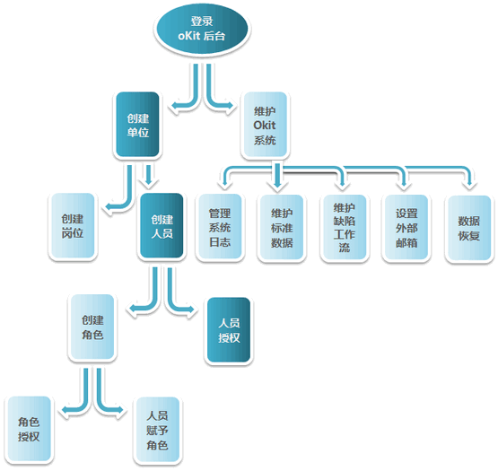
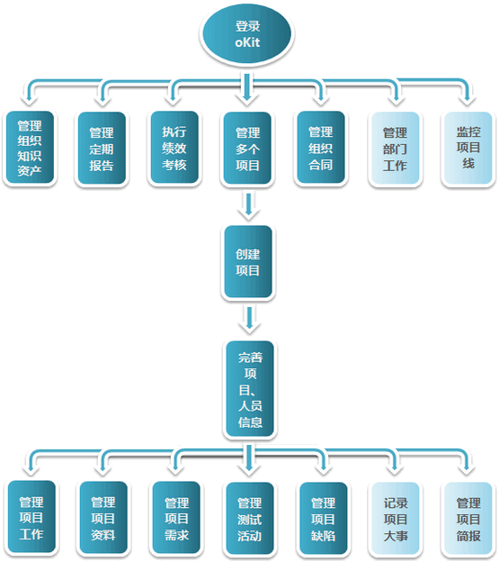
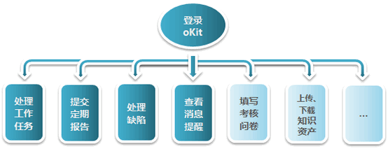

本节列出了典型角色的使用流程图。包括：系统管理员使用流程图。组织管理人员/项目经理使用流程图和：普通用户/项目参与者使用流程图。
ps：在流程图中点击各流程，可查看相应的详细流程或手册说明。
系统后台管理员是oKit系统的总管理员，负责管理系统的组织用户数据（包括单位、用户、角色、权限）、标准数据等，拥有查看系统使用日志，设置外部邮箱，恢复系统已删数据等权力。
其使用流程图如下：

组织管理人员指公司/单位的领导，部门经理，项目经理等；项目经理指项目负责人、项目管理者。
其使用流程图如下：

项目参与者，顾名思义，也就是项目参与人员，组织/单位的一员，其不具备系统的管理权限。
其使用流程图如下：
